A two-camera, local-first gallery. Motion stills land on this box. A fast detector tags who or what. A local vision model (gemma4:e2b) adds scene flags. Nothing is uploaded unless you turn an integration on.
Read this top to bottom the first time. It follows the chrome you will see after you open the front camera.
How to read the pictures. Every still is from a synthetic fixture gallery — not your house. The fixture catalog includes sample sentences such as “A tan dog in the backyard…”. Your live e2b pass does not write free-text captions. Expect detector badges, quieter scene flags, and at most two synthesized facts such as “Postal delivery on foot.” Detector-only visits often have no sentence at all. The fixture catalog mixes both cameras so one walkthrough can show a dog visit and a postal visit. Live, each camera is its own site. On-still OSD clocks match the filename date (18 June 2026).
| Knob | This box |
|---|---|
| Front camera | http://<host>:8180 — header Webcam Live Feed |
| Back camera | http://<host>:8280 — header Dogcam Live Feed |
| Vision model | gemma4:e2b via local Ollama (~40 s/frame when busy) |
| Cloud fallback | off |
| Vision deep passes | on (person/dog/cat/bird jump the queue) |
| Idle backfill | off |
| Multi-image summaries | off |
| Quiet label | car |
| Disk budget | 5 GB per camera |
| Empty-frame age | 30 days |
| Camera offline | 24 hours without a new still |
| Timezone | Australia/Sydney |
| Slack | on, mode context — silent while summaries are off. objects = person/dog/cat/bird |
| HA MQTT | on this box (explicit host). Flags only |
| Camera | Address |
|---|---|
| Front (driveway / gate) | http://<host>:8180 |
| Back (yard / dogcam) | http://<host>:8280 |
Each camera is its own site. They do not share one URL or one filter state. On a phone, Add to Home Screen — there is no service worker, so you will not get a stale offline copy.
Title is Webcam Live Feed or Dogcam Live Feed. Subtitle is Monitoring front gate area · AEST or Monitoring backyard and dog area · AEST — not a LAN address. First paint on :8180 is already those front-camera strings. Switch to Dogcam Feed jumps cameras. On a phone, Panels hides or shows the date list, charts, and saved searches.
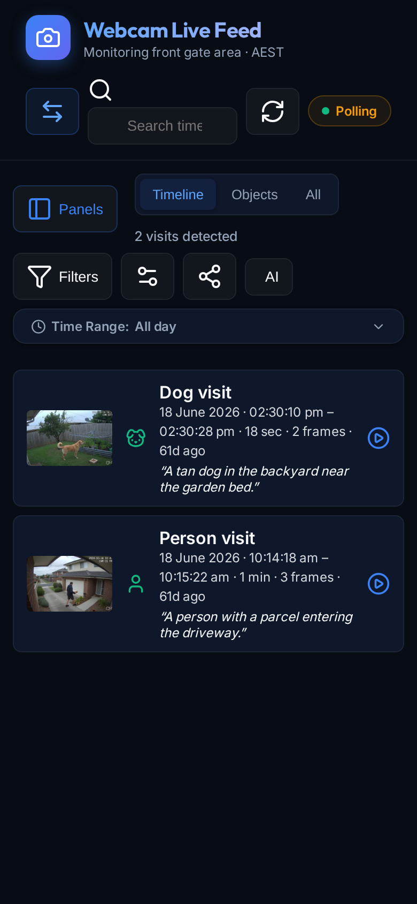
Header, left to right: Webcam Live Feed / Dogcam Live Feed, subtitle Monitoring front gate area · AEST (or backyard), Switch Feed, search, Refresh, and the Live switch. The toolbar (not the header) has Filters, Settings, Integrations, Help (this page), and AI (pipeline status). Status names the same cameras Front / Back.
| Badge | Meaning |
|---|---|
| Live | Event stream connected, heartbeats arriving |
| Stale | Stream still open, but the heartbeat went quiet |
| Polling | Asking the server on an interval |
| Auto-refresh: OFF | You flipped the switch; stream and polls are stopped |
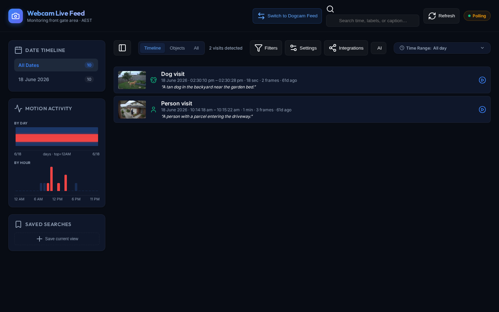
| Tab | What it is |
|---|---|
| Timeline | Object visits — one card you can play |
| Objects | Only frames the detector marked |
| All | Every motion still, including empty / CLEAR frames |
Grid density buttons appear on Objects and All only. Timeline hides them.
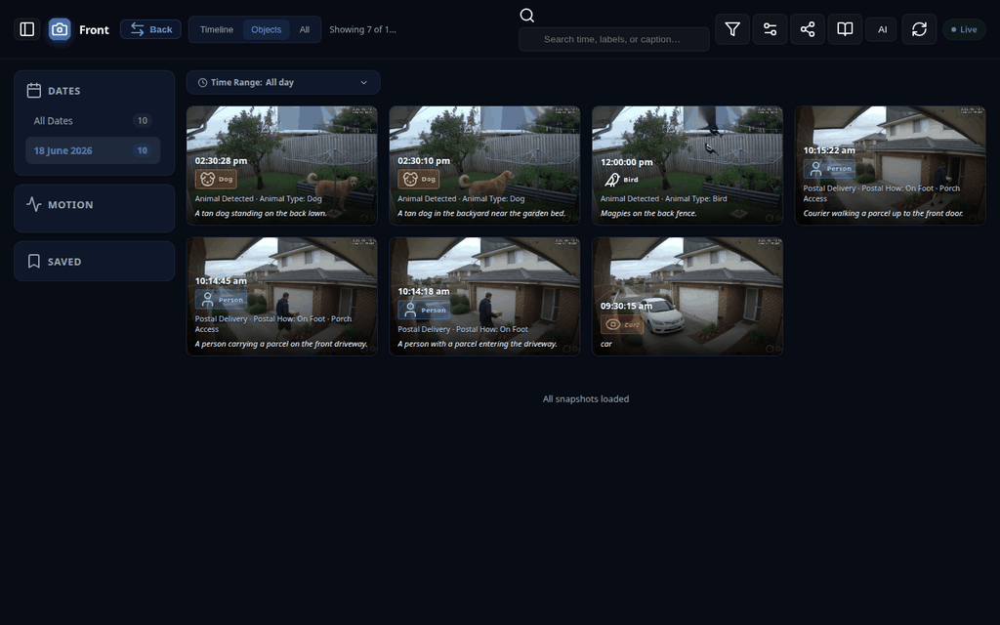
Car? is a detector hit the vision model has not finished (or will not — parked cars are quiet).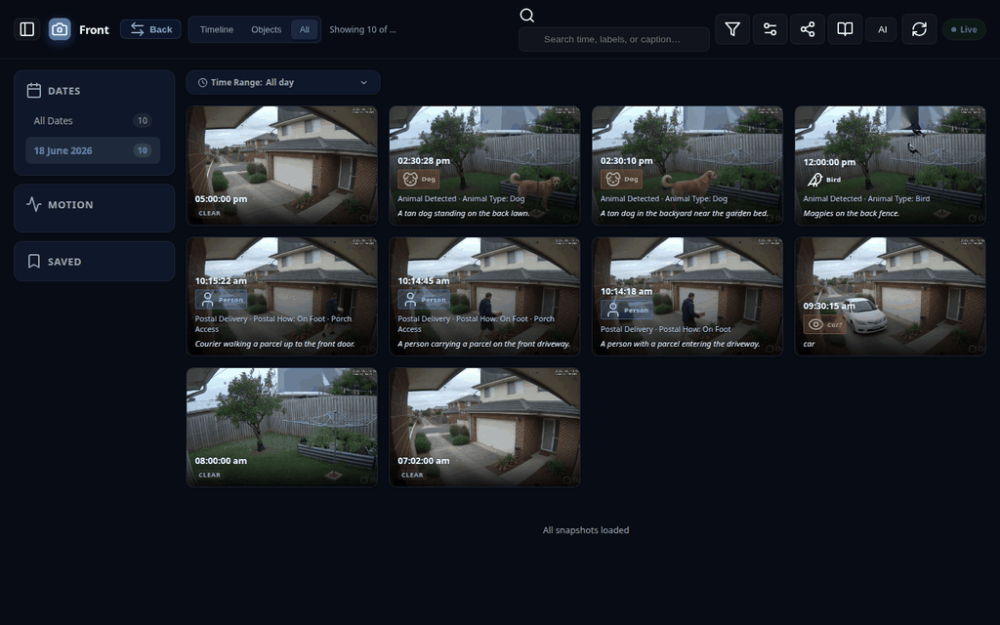
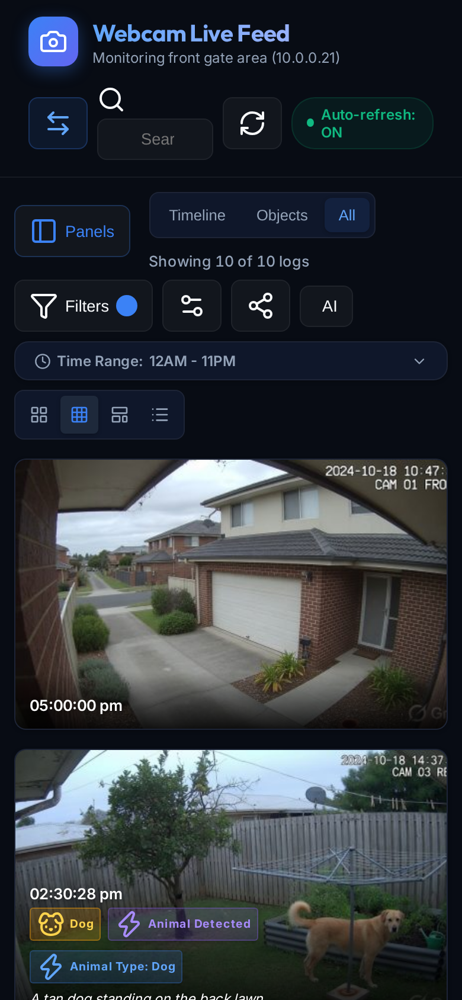
Today is the default. All Dates is still on the rail for the whole archive. If today has no stills yet, the newest day in the catalog is selected instead. Clear all returns to this home day. The count is how many stills that day has, not how many match the object filter.
By day — one bar per day, top = midnight, red marks when the currently filtered objects appeared. By hour — 12 AM → 11 PM. Search and object filters apply to these charts the same way they apply to the grid.
Save current view stores tab + chips + search + date + time range in this browser only. It does not sync to the other camera site or another phone.
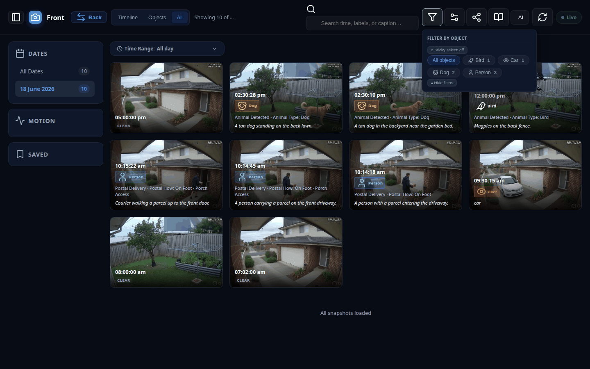
Sticky select on: tap several chips (match any). Off: one at a time. Hidden labels never appear here — unhide them in Settings; Clear all will not unhide them.
Search matches time, detector labels, event type, and caption text (fixture sentences or synthesized HA facts). Charts and cards share the same predicate. On a wide screen the placeholder is Search time, labels, or caption…; on a phone it shortens to Search….
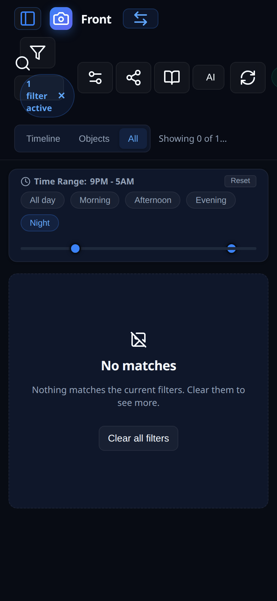
| Time pill | Hours |
|---|---|
| All day | 00–23 |
| Morning | 06–11 |
| Afternoon | 12–16 |
| Evening | 17–20 |
| Night | 21–05 (wraps midnight) |
Night is the porch-camera window. Use the Night pill, not the slider. The thumbs will look inverted; dragging them drops the wrap.
| You see | It means |
|---|---|
Person / Dog / Car | YOLO saw that object |
Car? (amber) | Detector hit; no successful vision merge yet |
| Struck-through badge | Leftover disputed UI. Hidden unless Show unconfirmed is on. Rare with e2b |
Postal delivery / Porch access | HA flags from a finished vision pass |
| CLEAR | Analyzed, no object |
Live captions: e2b does not write sentences. The gallery invents at most two facts from true HA flags. Detector-only cards often have no caption. Pin protects a file from retention. Delete confirms with date + label, never the FTP name.
e2b is asked at most two YOLO-gated questions per still (postal, dog-walk, package). Porch access is a tile-zone mask, not an e2b guess. Animal is copied from YOLO (dog/cat/bird) — e2b is not asked. It is not asked approaching_house, parked-car access, clothes on the line, or weapons. A backyard person with no dog spends no e2b time. A backyard dog with no person is tagged animal from YOLO only.
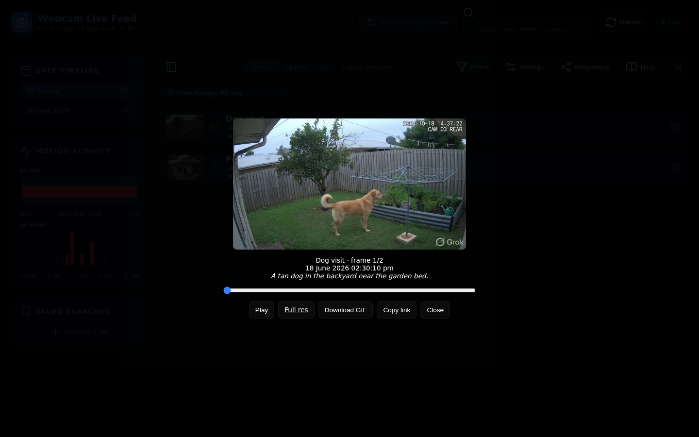
Autoplays unless reduced-motion is on. Download GIF only appears for multi-frame visits. There is no pin in the player — pin from an Objects/All card. The flipbook stays on the same camera and will not pull a still from more than five minutes earlier as lead-in.
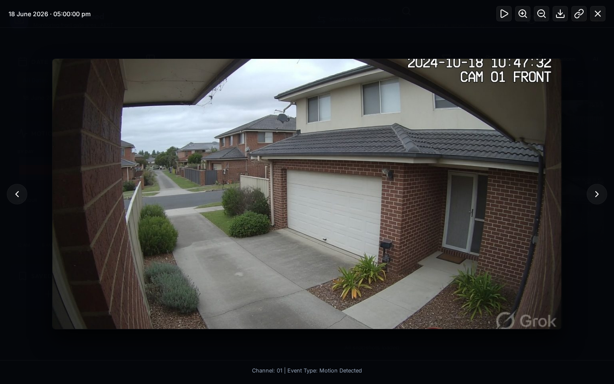
On a phone: swipe to next/prev (one finger, not zoomed), pinch to zoom, drag to pan when zoomed.
| Event | What you notice |
|---|---|
image.new | A new still lands (often still empty) |
detection.preliminary | Detector hit, including parked-car Car? |
new-detection | A successful vision merge with a detector label |
new-burst | A visit summary — rare, summaries are off |
ping | Heartbeat; missing pings turn the badge Stale |
A floating N new events — tap to view pill clears filters and jumps to the newest frames. Flip Live off and both the stream and the polls stop. The pipeline now appends events.jsonl as each frame is persisted (YOLO does not wait for the 40s vision pass). Status Deep analysis shows an ETA at ~40s/frame, one at a time.
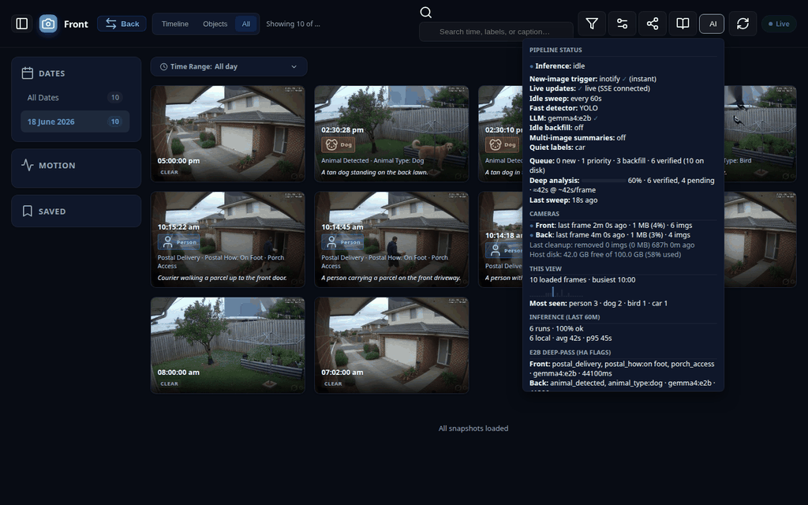
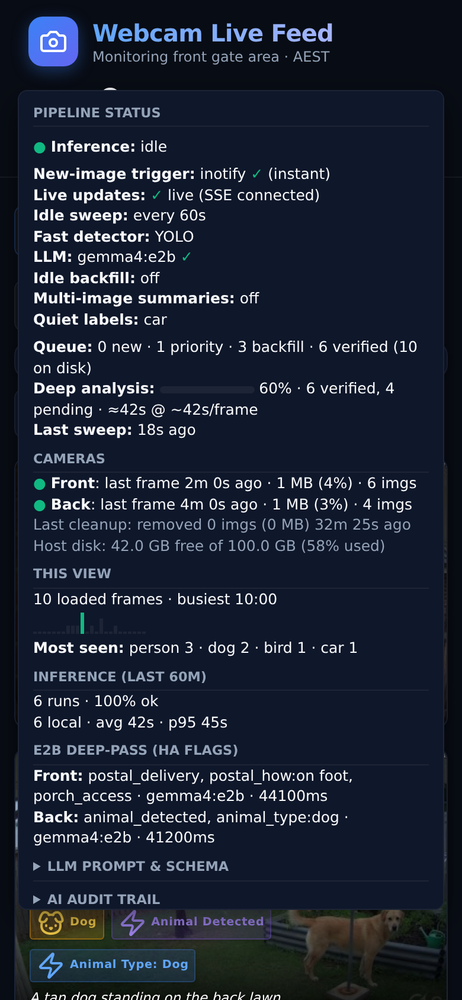
Queue: N new · N priority · N backfill · N verified (N on disk). Verified means a non-empty _llm dict. Also on this panel: Deep analysis % plus an ETA (≈42s @ ~42s/frame), Last sweep, last cleanup / host disk, Inference (last 60m), and E2B Deep-Pass (HA Flags). Live updates here reads live (SSE connected), not just “Live”. The LLM line has no “local only” label. The button pulses amber while a frame is in the model.
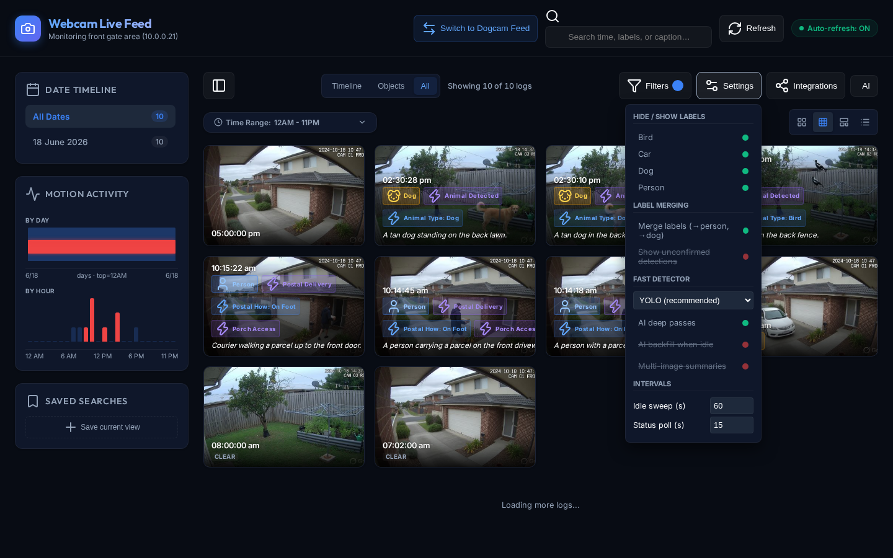
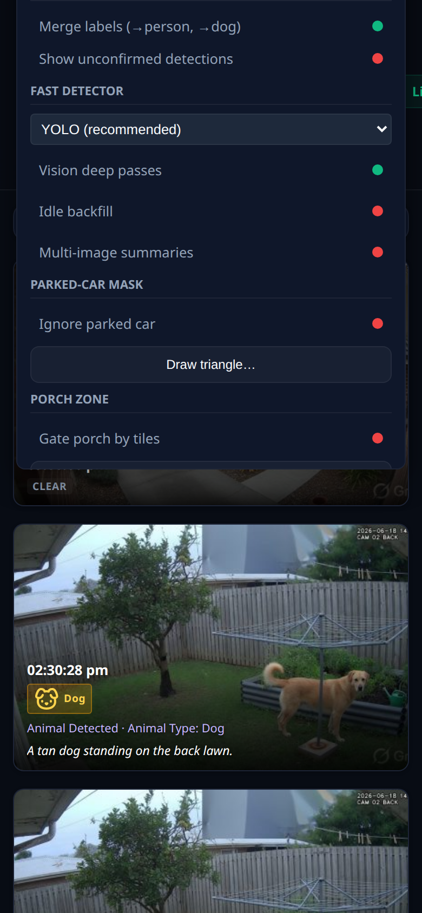
| Control | What it actually does |
|---|---|
| Hide / Show labels | Drops that object from Timeline / Objects / Filters. Unhide is the escape; Clear all does not unhide |
| Merge labels | face/body → person |
| Show unconfirmed detections | Reveals disputed badges. ? badges always show |
| Fast detector | Keep YOLO |
| Vision deep passes | Master switch for all vision-model work |
| Idle backfill | Verify leftover empties and car-only skips, nearest a detection first. Leave off |
| Multi-image summaries | Visit captions from several frames. Off. e2b 400s on that path |
| Ignore parked car | Front: triangle over the orange SUV bay. YOLO drops a car whose centre is in the triangle; a car on the street or leaving the driveway is kept. Draw triangle… to retarget. New stills only |
| Gate porch by tiles | Front: person YOLO centre on the grey tiled porch (right of frame) sets porch_access. Path, driveway, and street are false. e2b is not asked. Draw porch… to retarget. New stills only |
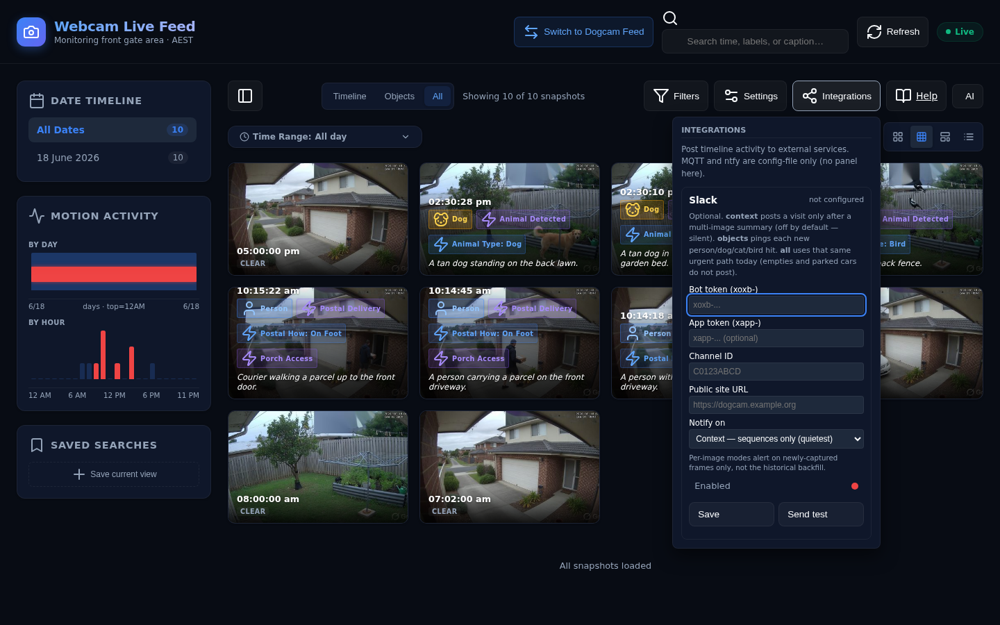
The panel is Slack. MQTT and ntfy are config-file only.
| Slack notify on | When it posts |
|---|---|
| Context — sequences only | Only after a multi-image summary. Summaries are off, so this mode is silent |
| Object detections | Each new person/dog/cat/bird hit. Vision does not have to finish. Not parked cars. Not backfill |
| All | Same urgent path as objects today. Empties and parked cars do not post |
A corrupt secrets file is refused on Save (409): integrations.json unreadable — save refused. MQTT/ntfy are not wiped. Product-default MQTT is off until you set enabled and an explicit host; this box has it on. It publishes flags, not JPEGs, and only after a successful non-empty _llm merge. ntfy needs an explicit server_url — there is no public ntfy.sh default.
Car? and do not spend urgent LLM budgetFrames and inference stay on this machine by default. Slack, ntfy, and HA MQTT can leave the box only if you turn them on. This guide’s screenshots are generated fiction.
| Symptom | Likely cause |
|---|---|
| Empty Objects tab | No detector hits in the current day / filter / search |
| Empty Timeline, “labels are hidden” | You hid a label in Settings. Unhide, not Clear all |
| One camera looks stale | No new stills for 24 hours |
| Images vanished | 5 GB budget or 30-day empty-frame rule. Pins survive |
| Pin / delete / GIF do nothing | Write API on :8190 is down |
| Slack never pings | Mode is context and summaries are off. Switch to objects |
| Night slider looks broken | Use the Night pill |
| Caption missing on a visit | Normal. e2b does not write sentences |
Operators: DEVELOP.md, DEPLOYMENT.md, API.md, and ROADMAP.md live in the git repo, not on this camera site.